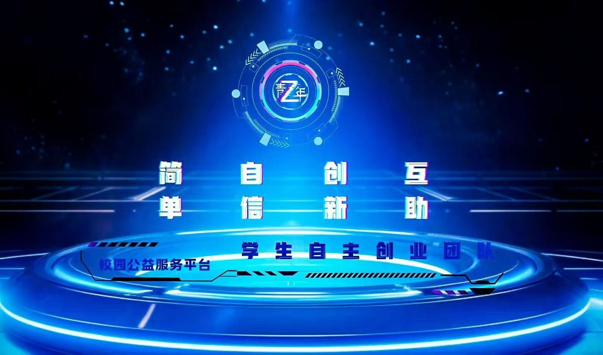
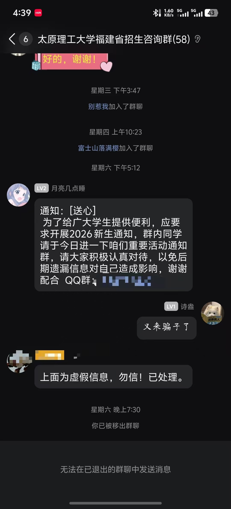

整合校园资讯，把重要通知及时送到同学手中。
2026
写给第一次上大学的你 不需要焦虑，不需要紧张。跟紧学长步伐，带你轻松报到！
人手一本—— 新生必看手册
由上百名太理优秀学长学姐总结下来的超级“焚诀”——用最真实的亲身经历、 最通俗易懂的话，带你明白转专业、奖学金、入党、保研、社团等。 学校环境、宿舍环境和最基础的校园小常识，也一次性跟大家讲明白。
ADMISSION FILE / 001
TYUT · 2026
明向校区 · 官方校园全景
YOUR NEXT STATION
求实
创新
MEET Z YOUTH
01 · 先认识陪你入学的人
“呆梨百事通”隶属于 Z青年团队，由太理学生自主创建并独立运营。 团队把复杂的校园信息重新讲清楚，也把真实的经验交到下一届新生手里。

四个协作中心
01运营中心
02媒体中心
03技术中心
04志愿服务中心
用图文与视频，记录真实、鲜活的太理生活。
建设校园工具，让信息检索和互助更简单。
连接同学需求，把“有人帮”落到具体行动。
2026 团队招新 QQ 群
1056302124
查看团队原文 ↗
SENIOR NOTES
02 · 学长学姐答疑团
从转专业、奖学金、入党和保研，到课程、竞赛、社团与校园生活。 先按方向找到对的人，再点击头像查看他的完整经历与联系方式。
MENTOR DIRECTORY
按头像找学长学姐
10 位答疑伙伴 · 点击切换资料
OFFICIAL ACCESS
09 · 先收藏这些入口
CAMPUS ATLAS
04 · 先确认你去哪个校区
录取通知书上的报到校区最权威。下方地图来自太原理工大学官网， 可搜索、缩放和查看设施实景；也可扫描二维码打开校园导览。 校园楼宇与道路如有调整，以现场标识为准。
DIGITAL CAMPUS MAP
扫码打开校园导览
长按识别或使用微信扫码，在手机上查看校园地图。出发前仍请先核对录取通知书上的报到校区。
平面设施标注层
设施目录
点击名称，地图会自动定位
地图来源：太原理工大学官方校园导览
PACKING CHECKLIST
03 · 先分装，再出发
七类物品按用途收好，点开一类再逐项确认。勾选进度会自动保存在当前浏览器。
0%已准备
随身包
证件原件、录取通知书和贵重物品不托运
到校再买
床铺尺寸和宿舍规则确认后再补大件
轻装优先
先带第一周必需品，消耗品不必一次囤齐
FRESHMAN KNOWLEDGE BASE
05 · 太理新生攻略库
67 个专题按 8 个章节重新整理：先看总览，再进入具体问题。 内容同步自《新生入学指南大全》，可搜索、可按章节筛选，不必把整份长文一次展开。
CHAPTER DIRECTORY先选章节，再看具体问题
找到 0 篇
ARRIVAL ROUTE
06 · 报到当天怎么走
结合 Z青年学长学姐发布的攻略，帮你避开诈骗、顺利报到。 到校后按辅导员和迎新志愿者指引行动，任何向你收费或索要身份证的陌生人都不要相信。
- 01
直接前往宿舍
进校后直接前往宿舍楼下；中途搭话的陌生人全部不要相信，不交费，也不要提供身份证。
- 02
完成现场报到
现场报到不需要把身份证等证件交给他人，只需告知迎新志愿者班级和姓名，领取校园 e 卡通即算报到成功。
- 03
入住公寓
领取钥匙、检查家具和水电，有问题当场拍照并向值班人员登记。
- 04
安顿行李
贵重物品随身保管，先铺床和充电，再处理不紧急的采购。
- 05
跟进辅导员通知
关注辅导员通知，熟悉校园 e 卡通的使用，按要求完成信息收集等后续事项。
- 06
给家里报平安
与家人通电话报平安，介绍宿舍环境。我们已经是成年人，也要用清楚、及时的沟通让家长放心。
ANTI-FRAUD GUIDE
07 · 新生反诈，先记住三条底线
报到流程不向个人收费；身份证不交给陌生人；付款只走学校明确公布的渠道。 以“学长学姐”“志愿者”“老师”身份接近你，不等于身份真实。
线下报到没有个人收费环节，不扫陌生二维码，不向个人转账。
身份证、银行卡和验证码自己保管，不让陌生人代办业务。
遇到“紧急通知”，先向辅导员、学院接待点或校内窗口复核。

以“内部资料”“必过课程”制造焦虑，诱导私下付款。
用小额返利取得信任，再要求垫付大额资金。
谎称激活、充值或升级，套取证件与支付信息。
冒充学院或班级通知，催促立即扫码缴费。
以评选、兼职为名索取付款、账号或验证码。
冒充同学或老师急借钱，转账前务必电话确认。
FRESHMAN COMMUNITY
08 · 找到同校区的新生群
微信搜索 DLBST-2024 联系“呆梨百事通”，按校区和需求进入对应群。 不要轻信群内私聊，任何收费信息都先核实。
可咨询的校园社群
FIRST WEEK FAQ
10 · 第一周常见问题
SOURCE & UPDATE
重要的事，只认官方通知
本手册综合太原理工大学公开信息、Z青年团队经验与《新生入学指南大全》整理， 更新至 2026 年 7 月 20 日。具体日期、缴费、住宿和学籍安排以学校及学院当年通知为准。
更新整理